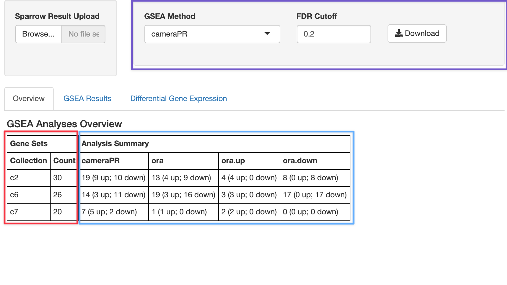

sparrow-shiny.RmdThis package provides a number of shiny modules we can use to
interact with a SparrowResult object we get from invoking
sparrow::seas().
We also provide a shiny app that combines these modules together for
interactive exploration which can be launched via the
explore() method. We’ll go over the functionality of the
app here.
We’ll perform a GSEA analysis using the
limma::cameraPR() and an overrepresentaiton analysis
(goseq-like test) via sparrow::ora using an example
expression dataset from the sparrow package, which was taken from a
subset of samples from the TCGA/BRCA indication.
We’ll also use a subset of the C2, C6, and C7 MSigDB gene set collections, which is also available as an example dataset in the sparrow package:
gdb <- exampleGeneSetDb()gdb contains the following number of genesets per
collection:
## collection n
## 1 c2 30
## 2 c6 26
## 3 c7 20And finally, we’ll run the limm::cameraPR() and
sparrow::ora() enrichment tests on the tumor vs normal
comparion:
You can launch the shiny app included here to explore the
seas results via the sparrow.shiny::explore()
function.
explore(sres)When you do that, you will be greeted with a tabbed interface with the following tabs outlined below.
 The control widgets in the top right box, outlined in purple, allow the user to filter which geneset results to view by only showing those genesets that have an FDR cutoff of less than 20% under the cameraPR analysis.
The table at the bottom that is highlighted with red and blue boxes gives you an overview of your GSEA hits from at the 20% cutoff. The numbers in the red box recapitulate the same output we calculated above, which tells us the number of genesets per collection we ran our analysis against (30 c2 gene sets, 26 c6, and 20 c7). The blue-highlighted portion of the table tells us the number of genesets per collection that satisfy the 20% FDR cutoff for each of the GSEA methods we ran: cameraPR or ora.
We can see that at an FDR of 20%, 19 gene sets in the c2 collection were significant, and nine of those gene sets are going up, whiel ten are going down.
Although we only ran one “ora” (over representation analysis), it is by default run in three ways:
ora: pathway enrichment results from taking all up and
down DGE genes.ora.up: pathway enrichment analysis using only up
regulated genes.ora.down: pathway enrichment analysis using only down
regulated genes.